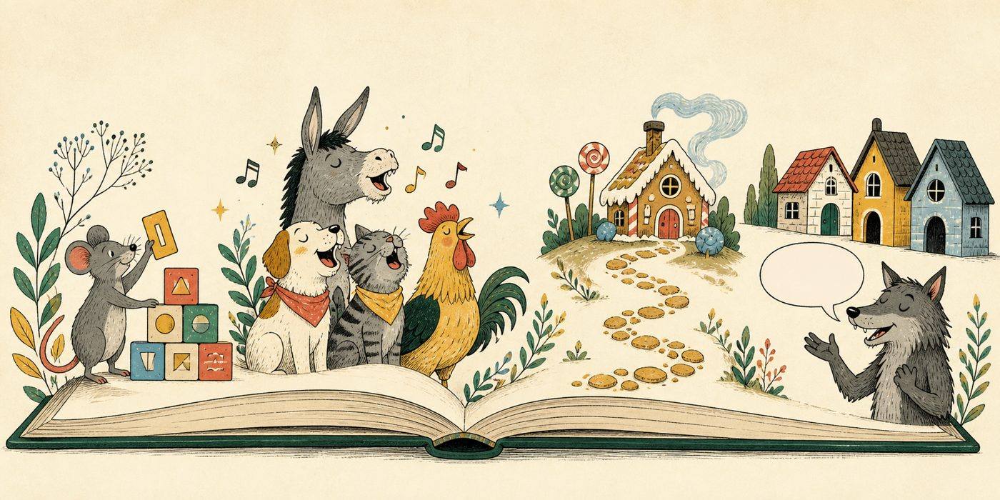

Primo anno · Dalla voce alla grammatica
Parole in fabula
Conoscete l’espressione lupus in fabula? Sapete che cosa vuol dire?

È una frase che abbiamo ereditato dal latino: lupus significa «lupo» e fabula ci fa pensare subito alla favola, anche se il significato non è proprio lo stesso. Fabula è ciò che si racconta o si sta dicendo in generale: perciò il significato letterale è il lupo nel discorso o nel racconto.
Un tempo la parola favola poteva indicare semplicemente un racconto. Oggi, invece, per noi è un tipo preciso di storia, accanto alla fiaba, al mito e alla leggenda. Sono forme diverse, ma hanno tutte radici nell’oralità: prima di essere scritte sono state raccontate e ascoltate.
Nelle favole i protagonisti sono spesso animali. Ma perché diciamo proprio lupus in fabula e non «gatto in favola» o «formica in favola»? Forse perché il lupo, quando compare nelle favole, mette molta ansia e spesso fa proprio paura. Il racconto, però, ci permette di farlo entrare nella nostra mente senza farlo entrare davvero nella stanza. Quando si racconta una favola il lupo non è reale, è un lupo finto che vive solo nella nostra mente di ascoltatori. Lo immaginiamo solamente, non lo vediamo comparire. Lo stesso vale per le persone di cui parliamo. Se adesso cominciamo a parlare di un altro prof non vuol dire che lui è nella stanza, ne possiamo parlare anche se non c’è. Anche se a volte succede che parliamo di qualcuno e ce lo ritroviamo davanti senza preavviso. In quel caso si usa l’espressione Lupus in fabula. Che è un po’ come dire al nuovo arrivato: Stavamo proprio parlando di te. Le parole avevano già fatto apparire quella persona nella nostra mente; subito dopo, eccola davanti a noi.
La stessa cosa succedeva, e succede ancora, con le favole. Basta nominare un lupo, una volpe, un leone o un topo e comincia ad apparire un mondo. Immaginiamo un carattere, una voce, un pericolo o un desiderio. Questa è una delle magie delle parole: non si limitano a indicare le cose, ma le fanno entrare nelle nostre storie e nella nostra mente.
Voi questa magia l’avete già sperimentata. Avete ascoltato storie, le avete raccontate ad altri, avete cambiato tono per far parlare i personaggi, scelto una parola invece di un’altra, avete riso e creato attese e sorprese. Tutto questo senza scrivere o leggere, solo ascoltando e parlando. L’oralità non è un gradino da abbandonare quando comincia la grammatica: è la base da cui partire.
Cominceremo quindi dalle parole vive, pronunciate, ascoltate e usate nelle storie. Le osserveremo più da vicino per capire come sono fatte, come cambiano suono, come si scrivono e come i segni aiutano la voce e il significato.
Quattro laboratori per scoprire come le parole si formano, suonano, si scrivono e prendono ritmo nei racconti. Poi comincia la seconda parte, dedicata alle parti del discorso: si apre con il testo misterioso.
Il topo e l’alfabeto
Il topo dei fumetti
Lettere, parole, ordine alfabetico e lettere viaggiatrici.
Il coro dei musicanti
I musicanti di Brema
Dalla voce ai segni: fonemi e grafemi, vocali insieme, digrammi, trigrammi e sillabe.
Il sentiero delle parole
Hansel e Gretel
Le grafie che fanno inciampare: C e G, H, CU/QU/CQU, doppie, accenti e apostrofi.
Il respiro del racconto
I tre porcellini
Pause, intonazione, organizzazione del testo e dialogo diretto nella scena del lupo.
Il testo misterioso
Il leone e il topo · La volpe e l’uva
Seconda parte: una favola rotta in gruppi di parole per scoprire che le parole fanno lavori diversi.